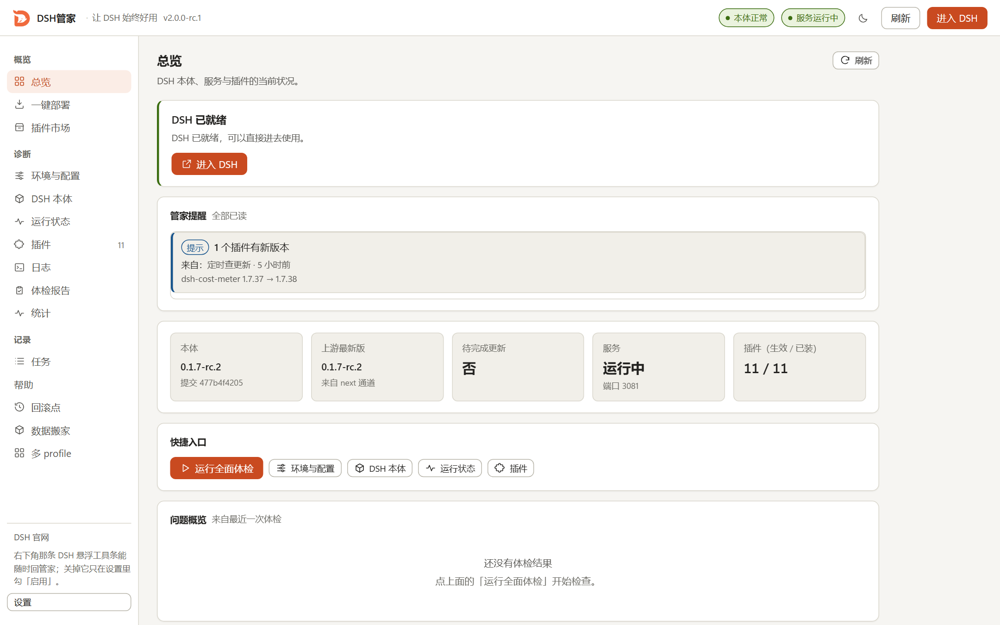
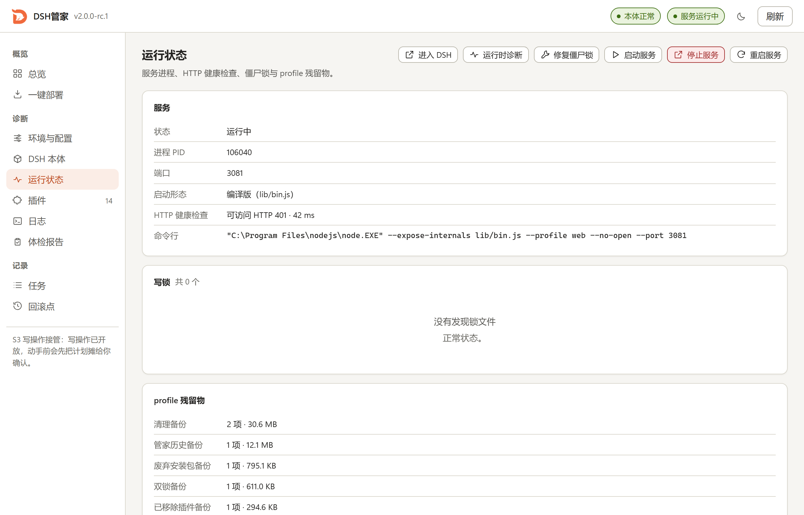

插件管理
扫一遍本机插件，依赖、生效、作层资格、实体一起看；来源可追踪，装了什么、从哪来，一眼就有答案。
- 启用、禁用、更新、卸载都在同一处
- 卸载先摘名单再隔离目录，不留「启动即崩」的半成品
- 安装前建回滚点，失败自动还原
装、修、更新、守护，四件事覆盖从零安装到日常使用的全部环节。
扫一遍本机插件，依赖、生效、作层资格、实体一起看；来源可追踪，装了什么、从哪来，一眼就有答案。
环境体检覆盖 Deno、Node、Git、磁盘和网络；出问题时，日志与体检报告把原因、影响、建议分开写。
默认自动检查更新，有新版本就告诉你；真要动手时先给计划，确认之后才执行。
整链大约 5 到 30 分钟，取决于网络和磁盘。
托盘常驻，服务状态随时能看；单窗口外壳打开就是 DSH，还没装就是部署向导。
两张浅色主题的界面图。总览页把本体、服务与插件放在一屏，结论永远在最上面；运行状态页把进程、HTTP 健康检查、僵尸锁和残留物分开列。


每一步都先摊开给你看，你确认了才动手。
从零装 DSH：先出计划，再拉源码、装依赖、全量构建、起服务，最后做三连验证。装完直接进 DSH 界面。
只读诊断先跑一遍：全面体检、环境体检、本体状态、服务状态。这一步不动任何文件，也不会改配置。
所有写操作先出计划：要改什么、有什么风险、失败了怎么办。危险动作要勾选确认，没确认就只给预览。
写之前先建回滚点。更新失败或者任务中途被杀，重启之后回到操作前的状态，绝不静默成功。
窗口里能做的，命令行里同样能做；只读命令加 --json 就能接进脚本。
dsh-butler doctor 全面体检dsh-butler core status 本体状态dsh-butler runtime logs -n 200 日志收集网站暂时不提供安装包。等安装包准备好，这里会第一时间给出下载入口。